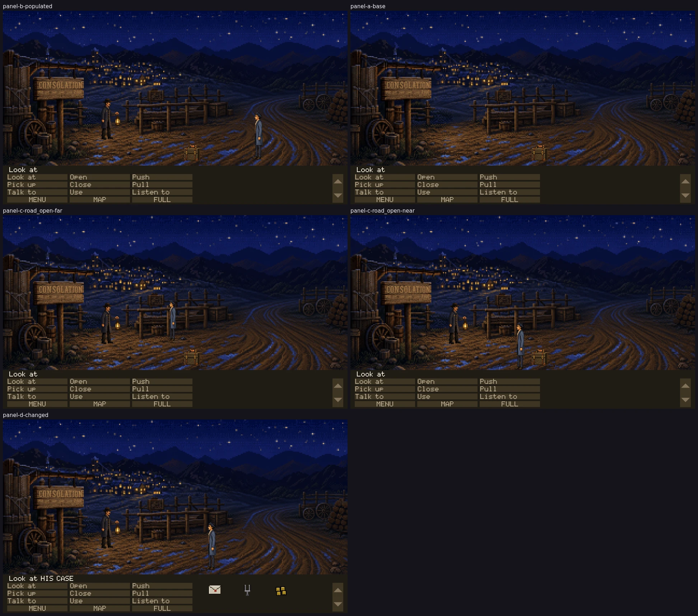

Every frame below is the full play area as the renderer drew it, in the running
game, at ac20c9ca on claude/last-claim-autonomy-audit-v3vsy6.
No crop, isolated sprite or source image appears here: those are for diagnosing what a full
frame has already shown.
These panels establish technical admissibility only. Nothing here says the
art is good, in style, funny or approved. Only Tyler sets visual_accepted.

THE COMMITTED SHEETEvery panel, complete, at
50% —
downscaled, never cropped. The full-resolution captures are reproducible test artifacts
and are not in git; their hashes are below.
PASS — technically admissible
PANEL B — normal populated stateroom stage_road · camera 0 ·
flags T_OPENING_SAID T_COACH_DEPARTED T_UNDERTAKER_NAMED T_HOB_CROSSING T_OPENING_DONE T_CASE_DOWN ·
inventory nonethad @1420,830 263px sprite · hob @600,720 230px sprite · coach @3000,742 389px spritePANEL A — base state, cast suppressedroom stage_road · camera 0 ·
flags T_OPENING_SAID T_COACH_DEPARTED T_UNDERTAKER_NAMED T_HOB_CROSSING T_OPENING_DONE T_CASE_DOWN ·
inventory nonethad @1420,830 263px sprite · hob @600,720 230px sprite · coach @3000,742 389px spritePANEL D — principal changed state: THE CASE COMES OUT OF THE MUD. Doc 17 makes picking it up the game's first PICK UP, and it is the only change to Room 1 still available once the opening has handed over -- the coach has already departed by then, which is what the first version of this spec got wrong: it declared T_COACH_DEPARTED and the route had set it four actions earlier, so panel D was panel B with a different filename.
It is an ACTION rather than a flag because that is what it is. `case_mud`'s PICK UP carries `take: true`, and GameState.targets filters out anything the actor owns -- doc 22 item 9, taking something is an ownership change -- so the hotspot is simply gone afterwards. The panel shows a road with no case in it, which is the state the rest of Act I is played in.room stage_road · camera 0 ·
flags T_OPENING_SAID T_COACH_DEPARTED T_UNDERTAKER_NAMED T_HOB_CROSSING T_OPENING_DONE T_CASE_DOWN T_CASE_TAKEN ·
inventory letter tuning_fork four_dollarsthad @1160,838 263px sprite · hob @600,720 230px sprite · coach @3000,742 389px spritePANEL C — road_open far, authored y701expected 224px · runtime 224px ·
silhouette 224px, bottom y700art/actors/thad-idlebreak-left/idle-break-03.pngPANEL C — road_open near, authored y862expected 263px · runtime 263px ·
silhouette 263px, bottom y861art/actors/thad-idlebreak-left/idle-break-07.png